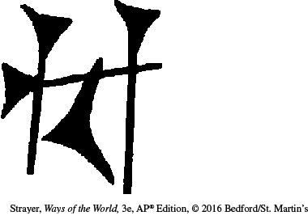

| Location | Type | Initial Use | Example | Comment |
| Sumer | Cuneiform: wedge-shaped symbols on clay tablets representing objects, abstract ideas, sounds, and syllables | Records of economic transactions, such as temple payments and taxes |  bird | Regarded as the world’s first written language; other languages such as Babylonian and Assyrian were written with Sumerian script |
| Egypt | Hieroglyphs (“sacred carvings”): a series of signs that denote words and consonants (but not vowels or syllables) | Business and administrative purposes; later used for religious inscriptions, stories, poetry, hymns, and mathematics |
rain, dew, storm | For everyday use, less formal systems of cursive writing (known as hieratic and demotic) were developed |
| Andes | Quipu: a complex system of knotted cords in which the color, length, type, and location of knots conveyed mostly numerical meaning | Various accounting functions; perhaps also used to express words |
numerical data (possibly in codes), words, and ideas | Widely used in the Inca Empire; recent discoveries place quipus in Caral some 5,000 years ago |
| Indus River Valley | Some 400 pictographic symbols representing sounds and words, probably expressing a Dravidian language currently spoken in southern India | Found on thousands of clay seals and pottery; probably used to mark merchandise |
6 fish | As yet undeciphered |
| China | Oracle bone script: pictographs (stylized drawings) with no phonetic meaning | Inscribed on turtle shells or animal bones; used for divination (predicting the future) in the royal court of Shang dynasty rulers |
horse | Direct ancestor of contemporary Chinese characters |
| Olmec | Signs that represent sounds (syllables) and words; numbering system using bars and dots | Used to record the names and deeds of rulers and shamans, as well as battles and astronomical data |
jaguar | Structurally similar to later Mayan script; Olmec calendars were highly accurate and the basis for later Mesoamerican calendars |